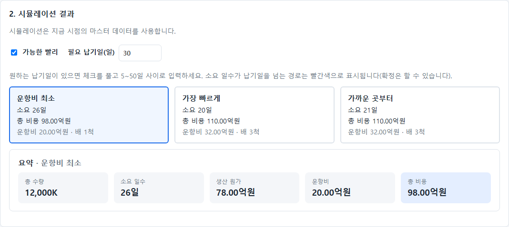
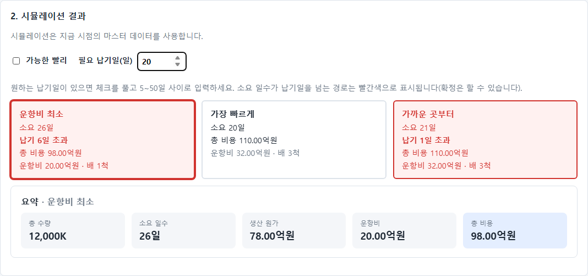
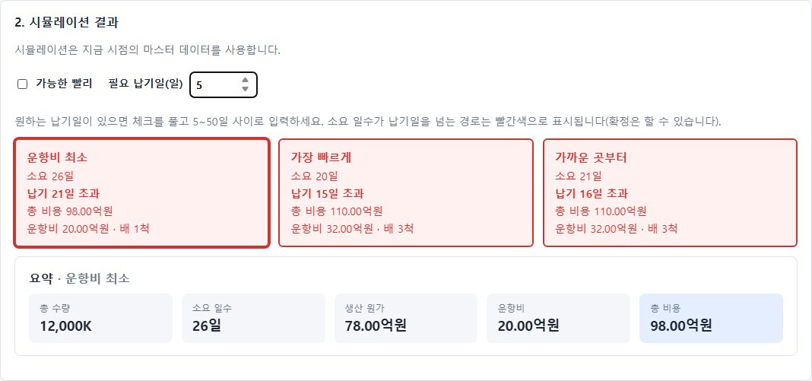
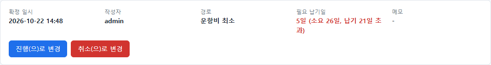
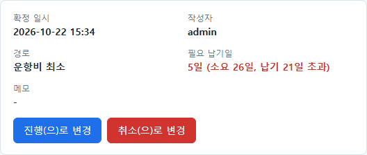

Inner Loop · 검증·리포트 작성 단계의 증거(Evidence) · TASK-005
한 줄 요약: 주문 추가 화면에서 '가능한 빨리'(기본) 또는 5~50일의 필요 납기일을 고를 수 있고, 소요 일수가 납기일을 넘는 경로는 빨간색으로 표시된다(확정은 가능). 납기일은 주문에 저장되어 상세 화면에도 나온다. JUnit 48/48, 전체 E2E 통과(건너뜀 1개), 새 E2E 6개는 10회 반복에서도 60/60 통과. 첫 구현의 새 테스트는 기능이 없는 옛 코드에서 JUnit 4개·E2E 6개가 모두 실패했다. PR #23 리뷰(Jaesuk-0307)를 반영해 서버가 소수·문자열 납기일을 거부하도록 고치고 경계 테스트를 보강했다(4장·5장).
※ 위 숫자는 3장 표(id="results")의 행만 센다. 표 밖의 건너뜀·미확인은 집계되지 않으므로 5장을 함께 읽는다.
| 구현한 것 | (리뷰 반영 후 최종 상태) ① 주문 추가 화면의 시뮬레이션 결과 영역에 '가능한 빨리' 체크박스(기본 체크)와 5~50일 입력을 추가. 체크를 풀면 입력이 켜진다. ② 소요 일수가 필요 납기일을 넘는 경로 카드는 빨간색과 "납기 N일 초과" 문구로 표시하고, 일수를 바꾸면 바로 갱신한다. 선택한 카드는 굵은 테두리로 구분한다. ③ 주문 확정 때 납기일을 서버에 보내 저장하고, 서버가 정수인지(소수·문자열은 거부)와 5~50 범위를 검증한다(화면도 범위 밖·빈 값이면 확정 전에 오류를 보여 준다). 값이 없거나 null이면 서버는 '가능한 빨리'로 처리한다. ④ 주문 상세에 "필요 납기일" 칸을 추가하고 초과하면 빨간색으로 초과 일수를 적는다. |
|---|---|
| 접근 방법 | 납기일이 지나는 경로도 확정은 허용하고 표시만 한다(요구사항의 "빨간색으로 표시"). 납기일은 비어 있으면 '가능한 빨리'(제한 없음)로 본다. 초과 여부는 저장된 경로 소요 일수와 납기일의 비교(Order.isLate())로 서버가 계산해 상세에 내려 주고, 주문 추가 화면은 시뮬레이션 결과로 직접 비교한다. |
| 파일 | 변경 내용 | 종류 |
|---|---|---|
| entity/Order.java | requiredDays(Integer, 비어 있으면 가능한 빨리) 필드, isLate() | 수정 (DB 컬럼 추가: ddl-auto=update) |
| service/OrderService.java | 확정 시 requiredDays 받아 5~50 검증 후 저장 | 수정 |
| controller/OrderController.java | 확정 요청에 requiredDays 추가. 소수·문자열을 조용히 정수로 바꾸지 않도록 JsonNode로 받아 정수만 허용(리뷰 반영) | 수정 |
| controller/dto/OrderDetail.java | 상세 응답에 requiredDays, late 추가 | 수정 |
| static/order-new.html, js/order-new.js | 납기일 입력, 경로 카드 빨간색 표시, 확정 시 값 전송과 화면 검증 | 수정 |
| static/js/order-detail.js | "필요 납기일" 칸과 초과 표시 | 수정 |
| static/css/app.css | 빨간 카드(.late), 납기 입력 줄, 상세 초과 글자색 | 수정 |
| src/test/.../JsonApiTests.java | 납기일 JUnit 7개 추가(첫 구현 4개 + 리뷰 반영 3개) | 수정(새 테스트) |
| e2e/tests/deadline.spec.ts | DLN-01~06 추가 | 새 파일 |
서비스 코드를 바꾼 점이 이전 PR(TASK-003)과 다르다. 확정 규칙에 납기일 검증이 들어가므로 필요한 변경이다.
| AC | 검증 항목 | 실행 명령 / 방법 | 결과 | 근거 (결과 파일·로그) |
|---|---|---|---|---|
| AC-1 | 컴파일 에러 0 | .\gradlew.bat compileJava compileTestJava --rerun-tasks | 통과 | results/after-compile.log (BUILD SUCCESSFUL) |
| AC-2 | 기본은 '가능한 빨리'이고 빨간 경로가 없으며, 상세에도 '가능한 빨리'로 나온다 | E2E DLN-01, DLN-02, JUnit orderWithoutRequiredDaysMeansAsSoonAsPossible | 통과 | results/after-e2e.json, results/after-junit/. 옛 코드에서는 모두 실패(results/before-new-*). |
| AC-3 | 소요 일수가 납기일보다 긴 경로만 빨간색이고, 일수를 바꾸면 바로 바뀐다 | E2E DLN-03(납기 5·최단 소요·최장 소요·50일에서 세 경로 모두 확인, 글자색 rgb(209, 52, 47) 확인) | 통과 | results/after-e2e.json, screenshots/02·03. 옛 코드에서 실패. |
| AC-4 | 납기를 넘는 경로도 확정되고, 저장·상세 표시가 정확하다 | E2E DLN-04·DLN-05, JUnit requiredDaysIsStoredAndLateIsTrueOnlyWhenRouteTakesLonger, lateRouteCanStillBeConfirmed | 통과 | results/after-e2e.json, results/after-junit/, screenshots/04. 옛 코드에서 실패. |
| AC-5 | 5~50 밖의 값(4, 51, 0, -1)은 화면과 서버가 모두 거부하고, 소수(5.5)·문자열("10", "abc")은 서버가 거부한다. 빈 값은 화면만 거부한다(서버는 값이 없거나 null이면 '가능한 빨리') | E2E DLN-06, JUnit requiredDaysOutsideFiveToFiftyIsRejected, requiredDaysMustBeAnIntegerNumber, explicitNullRequiredDaysMeansAsSoonAsPossible | 통과 | results/after-e2e.json, results/after-junit/. 첫 구현 기준 옛 코드에서 실패. 리뷰 반영 후 추가한 requiredDaysMustBeAnIntegerNumber는 수정 전 컨트롤러에서 실패함을 확인했다(다른 둘은 회귀 방지용이라 수정 전에도 통과). |
| AC-6 | 기존 JUnit·E2E 전부 통과, 새 E2E는 반복에서도 간헐 실패 없음 | gradlew.bat cleanTest test, npx playwright test, npx playwright test deadline --repeat-each=10 | 통과 | results/after-junit/ (48/48), results/after-e2e.json (89 통과·1 건너뜀·0 실패, 로컬 smoke.spec.ts 1개 포함이라 저장소 기준은 88 통과·1 건너뜀), results/after-e2e-deadline-x10.json (60/60, flaky 0) |
| AC-7 | 기존 테스트 파일을 수정하지 않았다 | git diff main --stat (기존 E2E 파일 변경 없음. JsonApiTests는 새 테스트와 도우미만 추가) | 통과 | 기존 테스트의 단언을 바꾼 곳 없음. |
| AC-9 | 기존 DB 파일로 기동해도 컬럼이 추가되고, 옛 주문은 '가능한 빨리'로 열리며 새 주문도 확정된다 | 옛 main(8c942bc)으로 파일 DB에 주문 1건을 만든 뒤, 같은 DB 파일로 이 브랜치를 기동해 API로 확인(수동, 결과 파일 없음) | 통과 | 옛 주문 #1: requiredDays 없음·late false·소요 26일로 열림. 새 주문(납기 10일)은 저장되고 late true. 서버 로그에 오류 없음(없는 번호를 일부러 조회한 경고 1건 제외). 리뷰어가 못 한 항목을 대신 확인함. |
| AC-8 | 결과 파일에 개인 정보(PC 사용자 이름·경로)가 없다 | 결과 파일 검색, JUnit XML의 실행 계정 이름은 <사용자>로 치환 | 통과 | results/ 전체에서 사용자 이름·Users 경로 0건. |
| 통과 기준 | 추가한 TC | 수정 전 코드(main 8c942bc)에서의 결과 |
|---|---|---|
| AC-2 | JUnit orderWithoutRequiredDaysMeansAsSoonAsPossible, E2E DLN-01, DLN-02 | 모두 실패(필드·입력이 없음) |
| AC-3 | E2E DLN-03 | 실패 |
| AC-4 | JUnit requiredDaysIsStoredAndLateIsTrueOnlyWhenRouteTakesLonger, lateRouteCanStillBeConfirmed, E2E DLN-04, DLN-05 | 모두 실패 |
| AC-5 | JUnit requiredDaysOutsideFiveToFiftyIsRejected, E2E DLN-06 | 모두 실패 (옛 서버는 알 수 없는 값을 무시하고 확정함) |
| AC-5 (리뷰 반영) | JUnit requiredDaysMustBeAnIntegerNumber (소수 5.5·5.0, 문자열, true, 배열, 범위를 넘는 정수를 400으로 거부) | 수정 전 OrderController(Integer로 받음)에서 실패(5.5가 5로 잘려 확정됨). 확인: 컨트롤러만 이전 상태로 되돌려 실행. |
| AC-4 (리뷰 반영) | JUnit lateIsDecidedAtExactlyTheRouteTotalDays (시뮬레이션 응답의 소요 일수를 읽어 납기일 = 소요 일수면 늦지 않고, 하루 모자라면 늦음), explicitNullRequiredDaysMeansAsSoonAsPossible | 이전에도 통과(경계 동작은 원래 맞았고 이를 구현식 복제 없이 고정하는 회귀 방지용) |
옛 코드 결과: JUnit 4개 실패(results/before-new-junit.log, 23개 중), E2E 6개 모두 실패(results/before-new-e2e.json, unexpected 6). 옛 코드는 main을 별도 작업 폴더로 받아 새 테스트 파일만 복사해 실행했다.
| 도구 | 대상 | 에러 | 경고 | 기준선과 비교 |
|---|---|---|---|---|
| 린트 미설정 → 컴파일로 대체 (javac via Gradle), 로그: results/after-compile.log | 변경한 Java 코드와 테스트 | 0 | 경고를 따로 집계하지는 않음 | 기준선도 컴파일 에러 0. 동일. |
| JS 린트·타입 검사 도구 없음 | 변경한 JS, E2E TypeScript | 미확인 | 미확인 | 도구 도입은 별도 기능. E2E 실행으로 동작만 확인했다. |
테스트와 별개로 실제 화면을 캡처했다(임시 스크립트로 캡처하고 삭제함). 12,000K 기본 주문 기준.





requiredDays로 소수(5.5)·문자열("10")을 조용히 정수로 바꿔 받아들임(precheck 위험표의 "소수는 서버가 검증"과 실제가 달랐다), 경계 테스트가 구현식을 복제함.JsonNode로 받아 정수만 허용(소수·문자열은 400 "필요 납기일은 정수로 입력하세요"), 경계 JUnit 3개와 DLN-06의 API 케이스(5.5, "10", "abc") 추가, 새로고침 때 체크박스·입력 상태가 어긋나지 않도록 초기화 때 상태를 한 번 맞추고 autocomplete="off", 상세 초과 문구 줄바꿈 방지(word-break: keep-all), 상수 private화·줄 길이 정리, 문서 문구 정정(빈 값은 화면만 거부). 5와 50이 화면·서버에 따로 있는 중복은 서버 값을 화면에 내려 주려면 API 변경이 필요해 이번에는 두었다(PR 답글로 설명).ERR_CONNECTION_REFUSED, 12건)가 났다. 다른 실행이 없는 상태로 다시 실행해 위 결과(89 통과·0 실패, 60/60)를 얻었고, 이 표의 결과 파일은 그 실행의 것이다.smoke.spec.ts(저장소에 올리지 않음) 1개가 포함되어 있어 저장소 기준 숫자는 88 통과·1 건너뜀이다.| 결정 | (사람이 채움: 완료 / 보완 필요) |
|---|---|
| 확인한 사람 | (사람이 채움) |
| 의견 | (사람이 채움) |